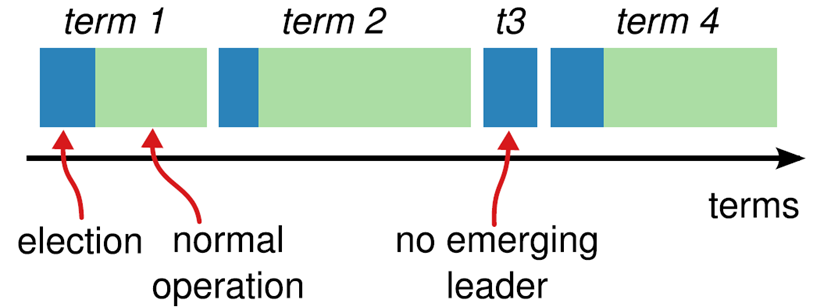
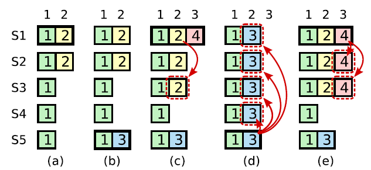

分布式一致性算法
分布式一致性问题，简单的说，就是在一个或多个进程提议了一个值应当是什么后，使系统中所有进程对这个值达成一致意见。
如果在一个不出现故障的系统中，很容易解决分布式一致性问题。但是实际分布式系统一般是基于消息传递的异步分布式系统，进程可能会慢、被杀死或者重启，消息可能会延迟、丢失、重复、乱序等。
CAP
- C 一致性（consistency）一个写操作返回成功，那么之后的读请求都必须读到这个新数据；如果返回失败，那么所有读操作都不能读到这个数据。所有节点访问同一份最新的数据。
- A 可用性（Availiable）对数据更新具备高可用性，请求能够及时处理，不会一直等待，即使出现节点失效。
- P 分区容错性（Partition tolerance）能容忍网络分区，在网络断开的情况下，被分隔的节点仍能正常对外提供服务。
C、A、P三者不能同时满足，最多只能满足其中两个。
多副本状态机
多副本状态机是指多台机器具有完全相同的状态，并且运行完全相同的确定性状态机。
多副本状态机在分布式系统中被用来解决各种容错问题。
如集中式的选主或互斥算法中的协调者（coordinator）。
集中式的领导者或互斥算法逻辑简单，但最大的问题是协调者的单点故障问题，通过采用多副本状态机来实现协调者实现了高可用的“单点”，回避了单点故障。
GFS，HDFS，RAMCloud 等典型地使用一个独立的多副本状态机来管理领导者选举与保存集群配置信息，以备节点宕机后信息能够保持。
Chubby 与 ZooKeeper 以及 Boxwood 等都是使用多副本状态机的例子。
多副本状态机的每个副本上都保存有完全相同的操作日志，保证所有状态机副本按照相同的顺序执行相同的操作，这样由于状态机是确定性的，则会得到相同的状态。
保证复制到各个服务器上的日志的一致性正是分布式一致性算法的工作。
Paxos
Raft
将一致性分解为多个子问题：Leader选举（Leader election）、日志同步（Log replication）、安全性（Safety）、日志压缩（Log compaction）、成员变更（Membership change）等
Raft 将系统中的角色分为
- Leader 接受客户端请求，并向 follower 同步请求日志，当日志同步到大多数节点上后告诉 Follower 提交日志
- Follower 接受并持久化 Leader 同步的日志，在 Leader 告知日志可以提交后，提交日志
- Candidate Leader 选举过程中的临时角色
Raft 要求系统在任意时刻最多只有一个 Leader，正常工作期间只有 Leader 和 Followers

Follower 只响应其他服务器的请求。如果 Follower 超时没有收到 Leader 的消息，它会成为一个 Candidate 并且开始一次 Leader 选举。收到大多数服务器投票的 Candidate 会成为新的 Leader。Leader 在宕机之前会一直保持 Leader 的状态。

Raft 算法将时间分为一个个的任期（term），每一个 term 的开始都是 Leader 选举。在成功选举 Leader 之后，Leader 会在整个 term 内管理整个集群。如果 Leader 选举失败，该 term 就会因为没有 Leader 而结束。
Leader 选举
使用心跳（heartbeat）触发 Leader 选举
初始化后，Leader 向所有 Follower 周期性发送 heartbeat，如果 Follower 在选举超时时间内没有收到 Leader 的 heartbeat，就会等一段随机的时间后再发起一次 Leader 选举
Follower 将其当前 term 加一然后转换为 Candidate。它首先给自己投票并且给集群中的其他服务器发送 RequestVote RPC 。结果有以下三种情况：
- 赢得了多数的选票，成功选举为 Leader；
- 收到了 Leader 的消息，表示有其它服务器已经抢先当选了 Leader；
- 没有服务器赢得多数的选票，Leader 选举失败，等待选举时间超时后发起下一次选举。
选举出 Leader 后，Leader 通过定期向所有 Followers 发送心跳信息维持其统治。若 Follower 一段时间未收到 Leader 的心跳则认为 Leader 可能已经挂了，再次发起 Leader 选举过程。
日志同步
Leader 选出后，就开始接收客户端的请求。Leader 把请求作为日志条目（Log entries）加入到它的日志中，然后并行的向其他服务器发起 AppendEntries RPC 复制日志条目。当这条日志被复制到大多数服务器上，Leader 将这条日志应用到它的状态机并向客户端返回执行结果。
某些 Followers 可能没有成功的复制日志，Leader 会无限的重试 AppendEntries RPC 直到所有的 Followers 最终存储了所有的日志条目。
日志由有序编号（log index）的日志条目组成。每个日志条目包含它被创建时的任期号（term），和用于状态机执行的命令。如果一个日志条目被复制到大多数服务器上，就被认为可以提交（commit）了。
保证：
-
如果不同日志中的两个条目有着相同的索引和任期号，则它们所存储的命令是相同的。
原因：Leader 在一个 term 内在给定的一个 log index 最多创建一条日志条目，同时该条目在日志中的位置也从来不会改变。
-
如果不同日志中的两个条目有着相同的索引和任期号，则它们之前的所有条目都是完全一样的。
原因： AppendEntries 的一个简单的一致性检查。当发送一个 AppendEntries RPC 时，Leader 会把新日志条目紧接着之前的条目的 log index 和 term 都包含在里面。如果 Follower 没有在它的日志中找到 log index 和 term 都相同的日志，它就会拒绝新的日志条目。
leader 和 follower 日志不一致的情况：Leader 崩溃可能会导致日志不一致，旧的 Leader 可能没有完全复制完日志中的所有条目。
Leader 会从后往前试，每次 AppendEntries 失败后尝试前一个日志条目，直到成功找到每个 Follower 的日志一致位点，然后向后逐条覆盖 Followers 在该位置之后的条目。
安全性
拥有最新的已提交的 log entry 的 Follower 才有资格成为 Leader。
这个保证是在 RequestVote RPC 中做的，Candidate 在发送 RequestVote RPC 时，要带上自己的最后一条日志的 term 和 log index，其他节点收到消息时，如果发现自己的日志比请求中携带的更新，则拒绝投票。日志比较的原则是，如果本地的最后一条 log entry 的 term 更大，则 term 大的更新，如果 term 一样大，则 log index 更大的更新。
Leader 只能推进 commit index 来提交当前 term 的已经复制到大多数服务器上的日志，旧 term 日志的提交要等到提交当前 term 的日志来间接提交（log index 小于 commit index 的日志被间接提交）
一种不安全情况：

在时刻 (a), s1 是 leader，在 term2 提交的日志只赋值到了 s1 s2 两个节点就 crash 了。在时刻（b), s5 成为了 term 3 的 leader，日志只赋值到了 s5，然后 crash。然后在 (c) 时刻，s1 又成为了 term 4 的 leader，开始赋值日志，于是把 term2 的日志复制到了 s3，此刻，可以看出 term2 对应的日志已经被复制到了 majority，因此是 committed，可以被状态机应用。不幸的是，接下来（d）时刻，s1 又 crash 了，s5 重新当选，然后将 term3 的日志复制到所有节点，这就出现了一种奇怪的现象：被复制到大多数节点（或者说可能已经应用）的日志被回滚。
如何杜绝：
也就是说，某个 leader 选举成功之后，不会直接提交前任 leader 时期的日志，而是通过提交当前任期的日志的时候 “顺手” 把之前的日志也提交了，具体怎么实现了，在 log matching 部分有详细介绍。那么问题来了，如果 leader 被选举后没有收到客户端的请求呢，论文中有提到，在任期开始的时候发立即尝试复制、提交一条空的 log
日志压缩
实际系统中，不能让日志无限增长，否则系统重启时需要很长时间进行回放，影响可用性
Raft 采用对整个系统进行 snapshot 来解决，snapshot 之前的日志都可以丢弃。
每个副本独立的对自己的系统状态进行 snapshot，并且只能对已经提交的日志记录进行 snapshot。
snapshot 包含以下
- 日志元数据。最后一条已提交的 log entry 的 log index 和 term，这两个值在 snapshot 之后的第一条 log entry 的 AppendEntries RPC 的完整性检查的时候会被用上
- 系统当前状态
当 Leader 要发给某个日志落后太多的 Follower 的 log entry 被丢弃，Leader 会将 snapshot 发给 Follower。或者当新加进一台机器时，也会发送 snapshot 给它。发送 snapshot 使用 InstalledSnapshot RPC
做 snapshot 既不要做的太频繁，否则消耗磁盘带宽， 也不要做的太不频繁，否则一旦节点重启需要回放大量日志，影响可用性。推荐当日志达到某个固定的大小做一次 snapshot。
做一次 snapshot 可能耗时过长，会影响正常日志同步。可以通过使用 copy-on-write 技术避免 snapshot 过程影响正常日志同步。